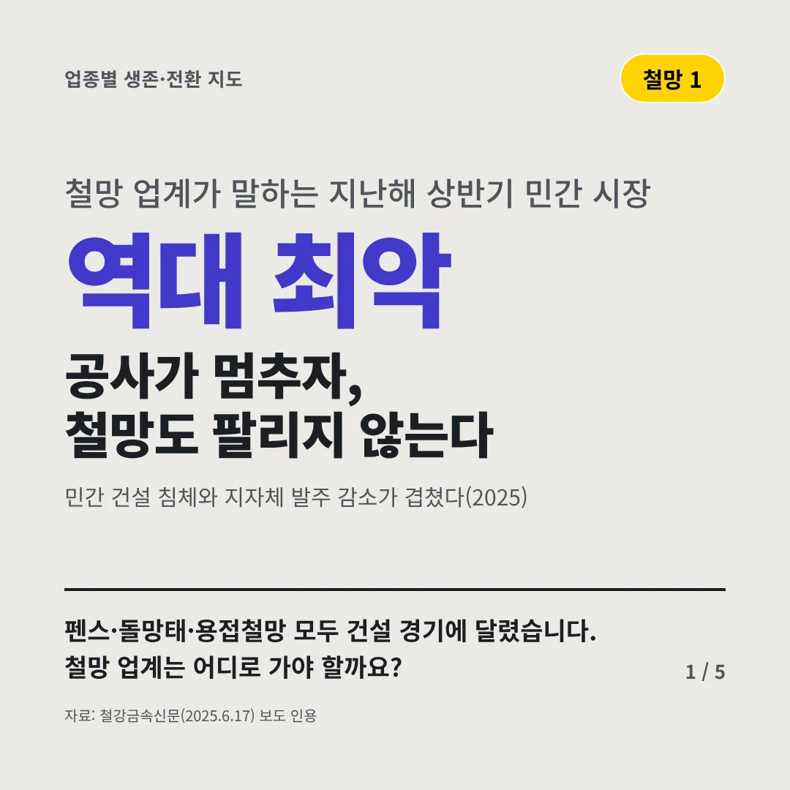
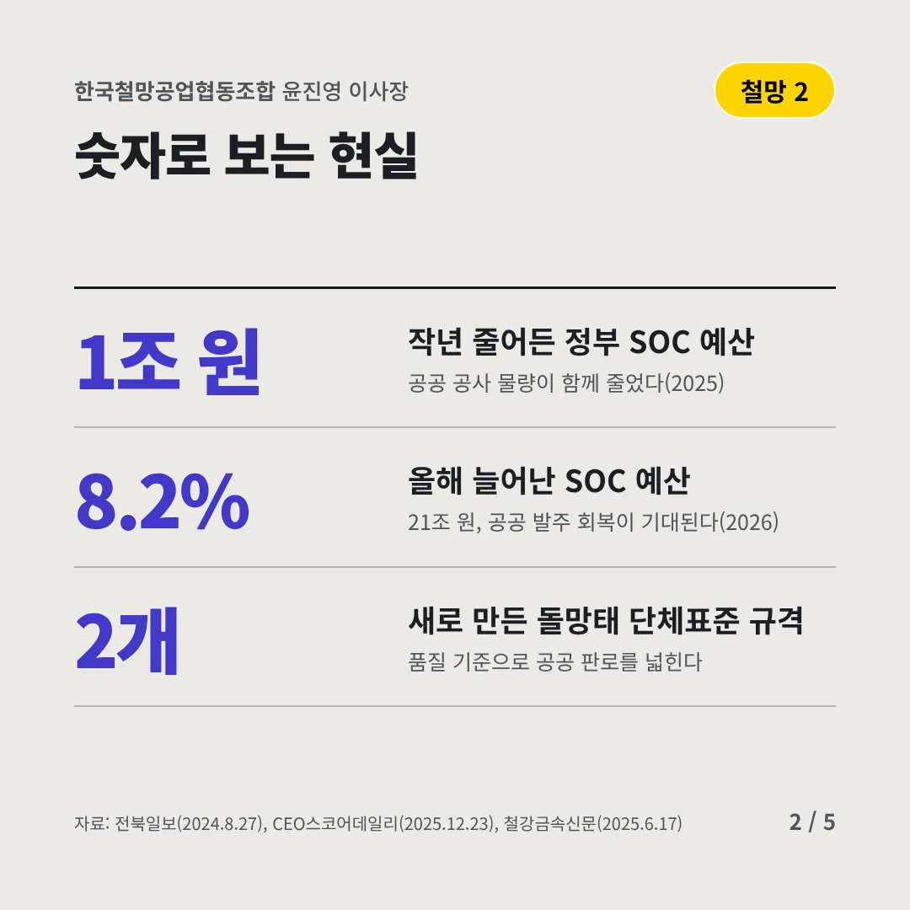
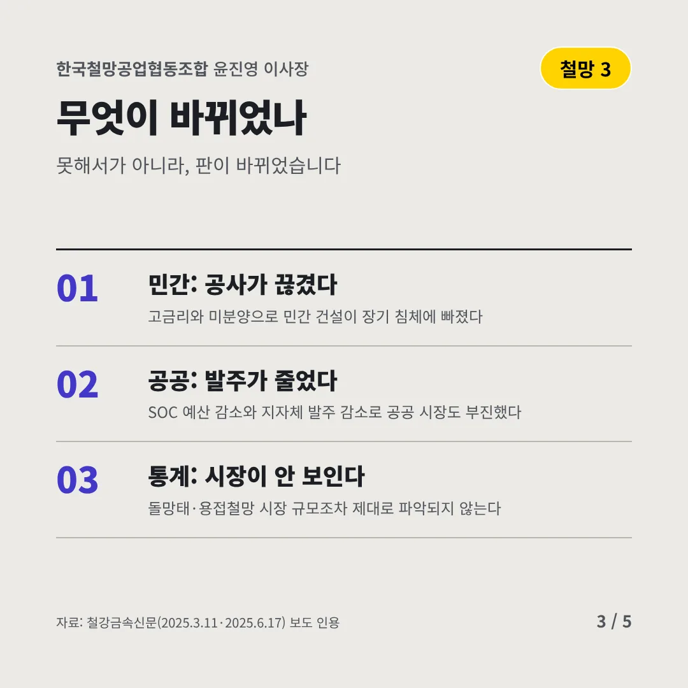
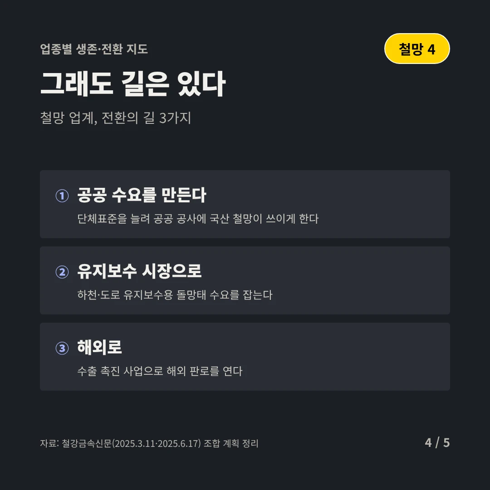
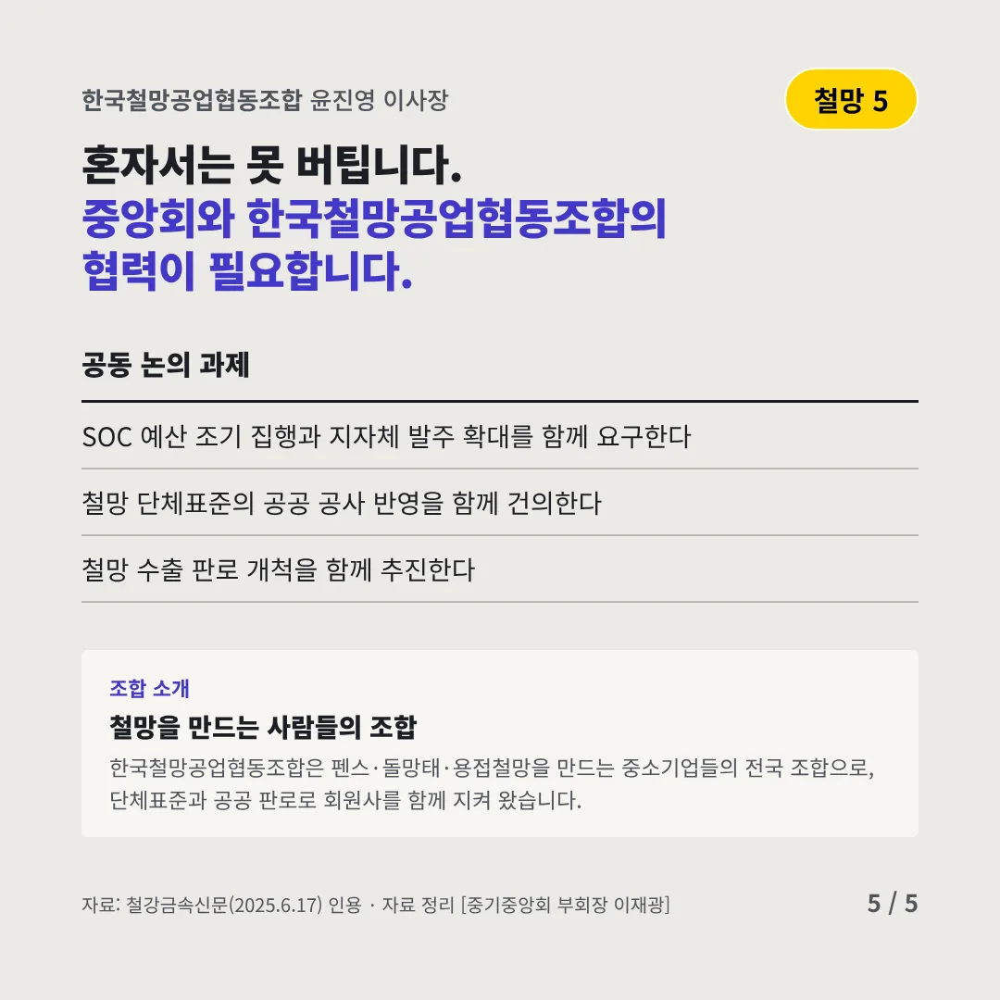
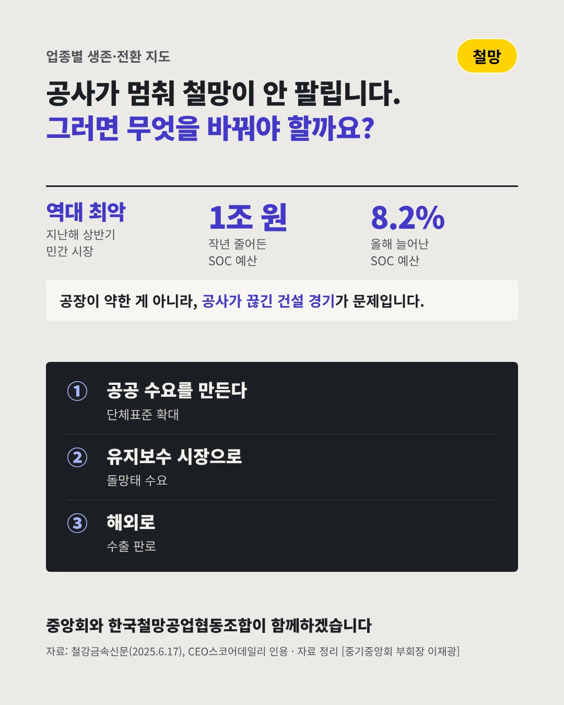

한국철망공업협동조합
공사가 멈추자, 철망도 팔리지 않는다
역대 최악 철망 업계가 말하는 지난해 상반기 민간 시장






펜스·돌망태·용접철망 모두 건설 경기에 달렸습니다. 철망 업계는 어디로 가야 할까요?
숫자로 보는 현실
- 1조 원작년 줄어든 정부 SOC 예산공공 공사 물량이 함께 줄었다(2025)
- 8.2%올해 늘어난 SOC 예산21조 원, 공공 발주 회복이 기대된다(2026)
- 2개새로 만든 돌망태 단체표준 규격품질 기준으로 공공 판로를 넓힌다
무엇이 바뀌었나
- 민간: 공사가 끊겼다고금리와 미분양으로 민간 건설이 장기 침체에 빠졌다
- 공공: 발주가 줄었다SOC 예산 감소와 지자체 발주 감소로 공공 시장도 부진했다
- 통계: 시장이 안 보인다돌망태·용접철망 시장 규모조차 제대로 파악되지 않는다
그래도 길은 있다
- 공공 수요를 만든다단체표준을 늘려 공공 공사에 국산 철망이 쓰이게 한다
- 유지보수 시장으로하천·도로 유지보수용 돌망태 수요를 잡는다
- 해외로수출 촉진 사업으로 해외 판로를 연다
한 장 요약

조합 소개
한국철망공업협동조합은 펜스·돌망태·용접철망을 만드는 중소기업들의 전국 조합으로, 단체표준과 공공 판로로 회원사를 함께 지켜 왔습니다.
자료: 철강금속신문(2025.6.17), 전북일보(2024.8.27), CEO스코어데일리(2025.12.23), 철강금속신문(2025.3.11·2025.6.17)